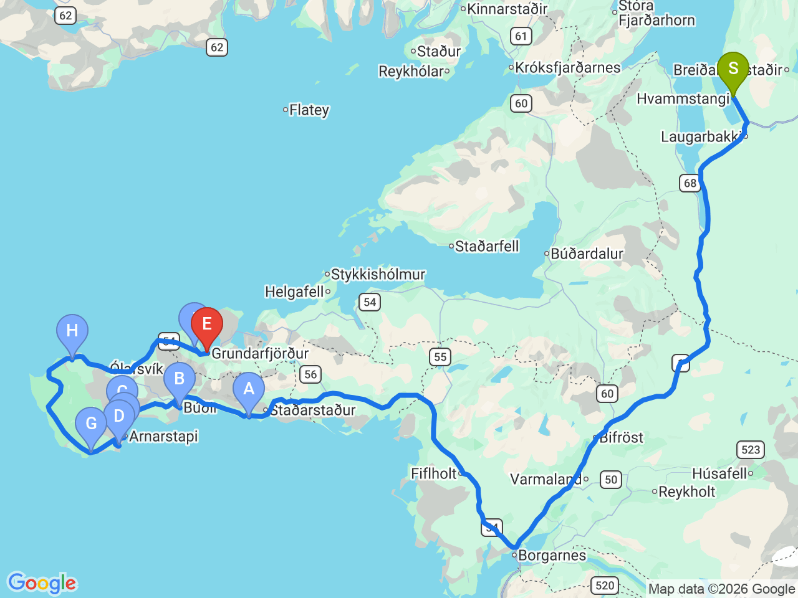

Day 14 · 2026-08-29（六）
冰島環島 Day 9/11
斯奈山半島環遊：海豹沙灘・黑教堂・教會山
冰島縮影半島一日巡禮，海岸奇岩、黑色教堂與《權力遊戲》名場景教會山

行程明細DAY 14
| 時間 | 地點 | 地點 (英文) | 價格 | 預計停留(分鐘) | 備註 |
|---|---|---|---|---|---|
| 08:30 | 飯店出發 | 前往斯奈山半島（Snæfellsnes Peninsula）南岸 | |||
| 10:30 | 伊特里通加海灘（海豹沙灘） | AYtri Tunga Beach | 900 | 45 | 冰島少數金黃色沙灘，全年都有機會觀察野生港海豹與灰海豹，建議攜帶望遠鏡 |
| 11:30 | 黑教堂 | BBúðakirkja | 免費 | 30 | 冰島最具代表性的黑色木造教堂，四周被熔岩原包圍，是斯奈山半島經典攝影景點 |
| 12:15 | 勞德費德峽谷 | CRauðfeldsgjá Gorge | 免費 | 45 | 狹窄裂谷可步行深入探險，需涉水與岩石行走，建議穿著防水鞋 |
| 13:10 | 黑拿教堂 | DHellnar Church | 免費 | 20 | 面向大西洋的小白教堂，景色寧靜，可順遊 Hellnar 海岸步道 |
| 13:35 | 斯奈山吟遊詩人紀念碑 | FMonument to the Bard of Snæfellsás | 免費 | 15 | 紀念冰島守護神話人物 Bárður Snæfellsás，融合歷史與民間傳說 |
| 14:00 | 倫德蘭加海蝕岩觀景點 | GLóndrangar View Point | 免費 | 45 | 欣賞高聳玄武岩海蝕柱與海鳥棲息地，是斯奈山半島最具代表性的海岸景觀 |
| 15:00 | 英加爾德斯霍爾教堂 | HIngjaldshólskirkja | 免費 | 20 | 冰島最古老的混凝土教堂之一，背景即為斯奈山冰川，是熱門攝影地點 |
| 15:50 | 教會山 | IKirkjufell | 1200 | 60 | 冰島最著名的山峰，《權力遊戲》拍攝地，建議傍晚停留拍攝山景與瀑布 |
| 17:00 | 抵達 The Old Post Office Guesthouse Check-in |
每日三餐
早餐
未安排
午餐
未安排
斯奈山半島南岸路線中段解決，餐廳尚未確認
晚餐
未安排
Grundarfjörður 附近解決，餐廳尚未確認
住宿資訊
The Old Post Office Guesthouse
📍 The Old Post Office GuesthouseCheck-in15:00
位於 Grundarfjörður，距離教會山僅約 5 分鐘車程，方便隔日出發
本日預估開車里程
220km
Albert Guesthouse → 斯奈山半島南岸景點群 → 教會山 → The Old Post Office Guesthouse（各景點間距離較短，總里程為概估）
該區域加油站
- N1 Grundarfjörður教會山旁小鎮補給站